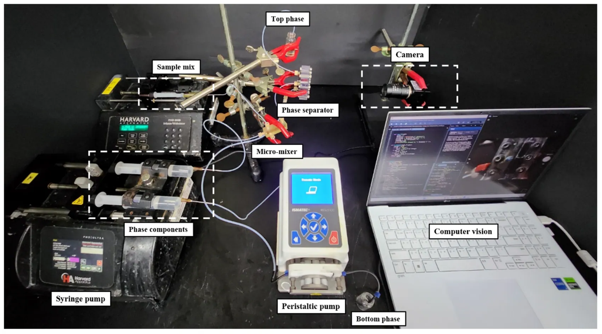

THEME 01
Intelligent Bioprocess Engineering
Continuous bioprocessing, integrated purification, PAT, chemometrics, machine learning and model-informed control.
Explore further ↗Research Group · VIT-AP University
Engineering next-generation bioprocesses and biochips through microfluidics, continuous processing, experimental innovation and computational intelligence.
RESEARCH · INNOVATION · TRANSLATION

MOLECULAR PERSPECTIVES
From molecular interactions to microfluidic devices and intelligent process platforms, SIBES explores engineering approaches that connect biological understanding with practical technologies.
OUR RESEARCH
Continuous bioprocessing, integrated purification, PAT, chemometrics, machine learning and model-informed control.
Explore further ↗
Microfluidic chip design, CFD simulation, microfabrication, sensing, automation and biological applications.
Explore further ↗CURRENT WORK & FUTURE HORIZONS
Published experimental research provides a foundation for future intelligent platforms. We distinguish completed contributions from ideas and directions being explored.

Automated mRNA platforms, oscillatory microfluidic reactors and computer-vision-controlled separation.
Explore further ↗
AI-assisted nucleic-acid manufacturing, hybrid Digital Twins and integrated sensing and biochips.
Explore further ↗
SIBES is an independent research group led by Dr. Vikas Sharma at VIT-AP University, bringing together biological sciences, engineering and computational approaches.
Our research explores integrated systems that are efficient, adaptable and resource-conscious, with applications in biomanufacturing, molecular diagnostics and sensing.
Our mission and approach ↗RESEARCH OUTPUTS

Lab on a Chip · 2026
Explore further ↗
Chemical Engineering Journal · 2025
Explore further ↗
Bioresource Technology · 2024
Explore further ↗Prospective PhD students may apply through VITREE. Research opportunities depend on funding and project availability.